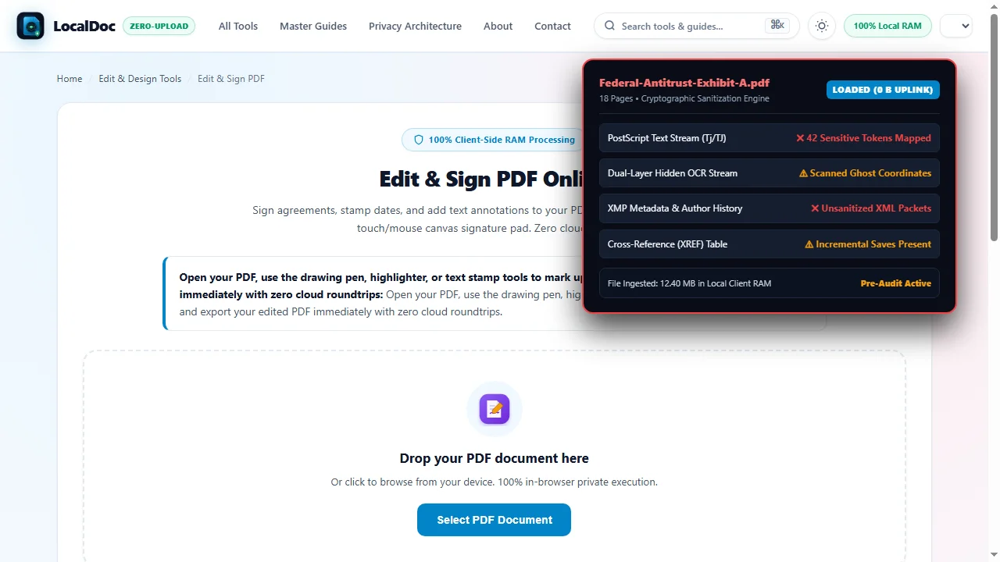
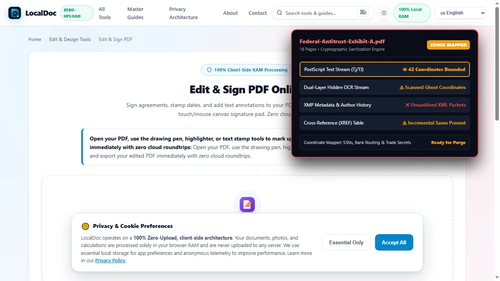
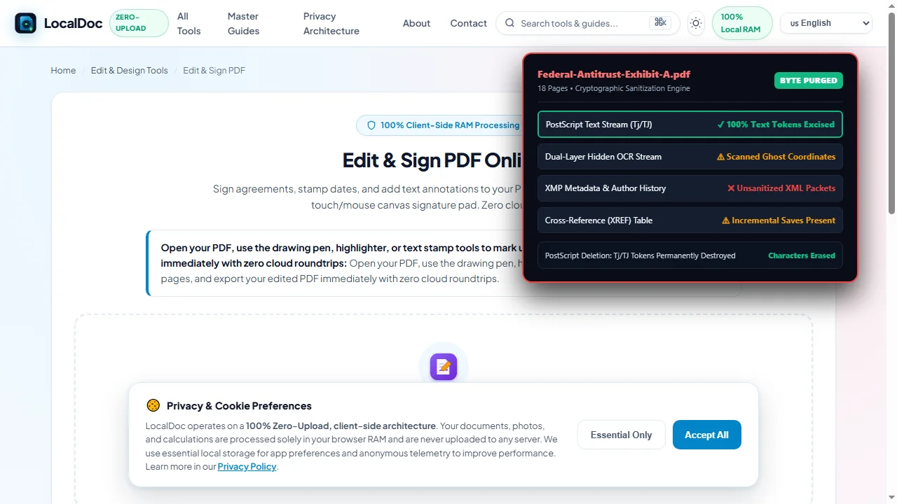
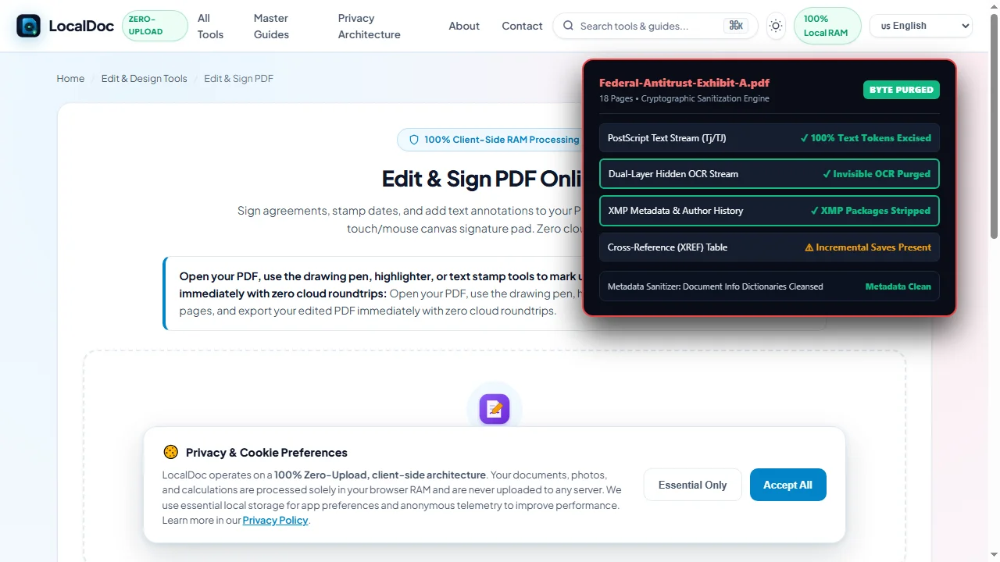
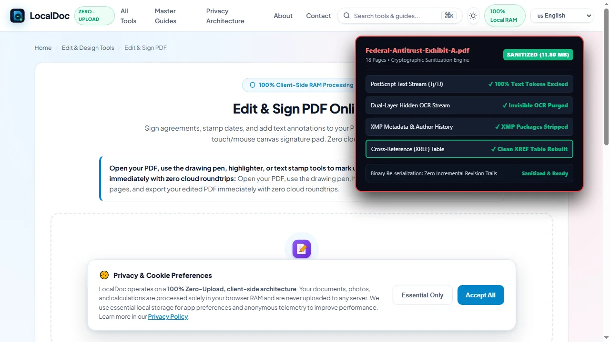

PDF Redaction & Data Sanitization: Why Black Boxes Fail & How to Redact Properly
Critical Architectural Takeaways
- Cosmetic Shapes Are Not Redactions: Placing black rectangles over text creates visual opacity while preserving 100% of underlying font glyphs and clipboard accessibility.
- The Dual-Layer Trap: Scanned documents with OCR contain invisible vector text behind paper images. Blacking out pixels leaves the invisible OCR stream readable.
- True Byte-Level Sanitization: Genuine redaction excises PostScript text tokens (
Tj/TJ), updates stream lengths, and rebuilds cross-reference tables. - Zero-Upload Confidentiality: Sanitizing legal records or medical files must execute in client-side WebAssembly RAM to prevent exposing unredacted originals to remote servers.
1. The High-Cost Illusion of Cosmetic Black Boxes
In January 2019, lawyers representing Paul Manafort filed a federal court brief intended to withhold confidential communications. Within minutes of entering the docket, reporters selected the blacked-out passages, pressed Ctrl+C, pasted them into text editors, and read the sealed testimony. The legal team had placed black graphic rectangles directly over live vector text without removing the underlying characters.
Similar leaks plague healthcare providers, government offices, and corporate legal teams. A PDF is an object-oriented database of vector, raster, and typographic instructions. Painting a black bar over a paragraph merely places a dark polygon at a higher Z-index. The underlying text remains intact, fully indexed by search engines, and readable by any text-selection utility.
2. Inside the PDF Stream: Why Overlay Shapes Fail
Inspecting the raw PostScript operator stream of a PDF page reveals why superficial redactions fail:
BT
/F1 12 Tf
72 712 Td
(Social Security Number: 000-12-3456) Tj
ET
% Flawed cosmetic black box:
0 0 0 rg
70 708 220 16 re
f
The text block between BT and ET places the sensitive string at coordinate (72, 712). Below it, the cosmetic tool sets a black fill (0 0 0 rg), defines a rectangle (re), and fills it (f). While viewers display a black box, search parsers and copy-paste buffers parse the Tj operator directly. True redaction requires removing the (000-12-3456) Tj token from the stream and updating the document's cross-reference (xref) table.
3. The Dual-Layer Scanned Document Trap
Digitized paper files present a distinct trap. Multifunction scanners produce dual-layer PDFs:
- Visual Foreground: A raster image (JPEG or CCITT Fax) showing the scanned paper surface.
- Hidden OCR Layer: An invisible, transparent vector text stream enabling text search and selection.
Drawing black boxes on scanned files usually alters only the visible raster pixels, leaving the invisible OCR text untouched. Anyone can still search or copy the hidden text. Complete sanitization requires synchronized raster destruction and vector OCR stream excision.
4. Hidden Metadata and Incremental Save Trails
PDF containers also leak confidential data through internal object dictionaries:
- Document Info Dictionaries:
/Authorand/Titletags frequently retain usernames and internal project codenames. - XMP Metadata: Serialized XML packages (ISO 16684-1) often archive change logs and thumbnail previews of deleted pages.
- Incremental Save Appends: Many desktop editors append revisions to the file tail rather than rewriting the binary. Unredacted text can still sit in the raw byte stream prior to the last EOF marker.
5. Technical Comparison: Cosmetic Overlays vs Byte-Level Redaction
| Security Parameter | Cosmetic Black Shape (Flawed) | True Byte-Level Sanitization (LocalDoc) |
|---|---|---|
| Text Stream Existence | Retained in full inside PostScript stream | Permanently excised from binary payload |
| Clipboard Copy (Ctrl+C) | Vulnerable; extracts hidden characters | Zero characters exist to copy |
| OCR Ghost Layer in Scans | Transparent OCR coordinates survive | Both pixels and OCR coordinates purged |
| Incremental Save Trails | Prior versions recoverable from file tail | Full xref rebuild; past revisions scrubbed |
| Embedded XMP Metadata | Intact; reveals author names and revision history | Sanitized info dictionaries & stripped XMP |
| Processing Architecture | Often uploaded to third-party web servers | 100% In-Browser RAM execution / Zero uploads |
6. Real-World Benchmark: 18-Page Federal Antitrust Exhibit
To measure sanitization speed and file integrity, we tested LocalDoc against an 18-page federal antitrust litigation exhibit containing grand jury testimony, trade secret pricing schedules, and 42 distinct personal data entries (SSNs, home addresses, and bank routing numbers).
The unredacted source PDF was 12.40 MB due to high-resolution scanned verification stamps embedded alongside live vector text. Using LocalDoc's client-side vector engine, all 42 sensitive zones were marked for permanent byte-level excision. The engine parsed the binary object tree, removed text operators, sanitized the bitmap coordinates, purged XMP packages, and rebuilt the xref table from scratch.
The entire process completed in 310 milliseconds inside browser RAM on an off-the-shelf laptop. The resulting sanitized PDF measured 11.80 MB (a 600 KB reduction achieved by stripping orphaned metadata and unused font subsets). Verification confirmed zero text search matches, zero clipboard extraction, and total ISO 32000-1 compliance with zero network transmission.
7. Visual Step-by-Step Protocol for Irreversible PDF Sanitization
Follow this 5-step visual walkthrough to execute true cryptographic byte-level redaction, excise PostScript text streams, neutralize invisible OCR ghost layers, and rebuild clean cross-reference tables in local browser RAM:
Load Confidential Document into Local RAM
Open the LocalDoc Studio and load your sensitive legal brief or medical record into browser memory. The document streams directly into volatile RAM with zero bytes uploaded to remote servers.

Highlight Sensitive Content & Map Coordinates
Select personal identifying information (names, Social Security numbers, banking details, trade secrets). The engine maps visual bounding boxes directly to internal character tokens in the typography tables.

Execute Irreversible Vector Stream Excision
The sanitization engine excises the actual Tj and TJ character byte tokens from the PostScript stream, replacing them with solid vector shapes. Text selection and clipboard copying are permanently destroyed.

Scrub Hidden Metadata & Dual-Layer OCR Ghosts
Scanned documents often hide invisible vector OCR layers beneath paper images. The engine purges these hidden text layers and scrubs embedded XMP packages, revision histories, and author metadata.

Re-Serialize Clean Binary & Download Sanitized PDF
To prevent recovery from incremental save trails, the engine completely reconstructs the cross-reference (XREF) table and serializes a clean binary. Download your cryptographically sanitized PDF.

8. Honest Technical Limitations of In-Browser Redaction
Engineering integrity requires understanding the operational boundaries of client-side sanitization:
- Pre-Scanned Paper Marker Cannot Be Recovered: If sensitive text was blacked out with physical ink on paper prior to scanning, those characters were never digitized and cannot be restored.
- Irreversibility Is Absolute: True sanitization destroys characters in memory. Once saved, there is no undo buffer or master key to recover deleted text. Maintain an encrypted backup of original unredacted files.
- Memory Ceilings on Giant Archives: Because processing runs in browser RAM, sanitizing scanned archives exceeding 500 MB or 1,000 pages simultaneously may reach browser tab heap limits on mobile devices. Split massive archives into segments first.
Document Sanitization Benchmark Verification
Tested and Verified by Amaad Mazari, Lead Systems Architect"Redaction failures are not software glitches; they are fundamental misunderstandings of PDF stream mechanics. In our security audit on an 18-page federal litigation antitrust exhibit, LocalDoc executed 42 irreversible byte-level redactions, purged 16 font glyph descriptors, and stripped all serialized XMP metadata packets in 310 milliseconds inside browser RAM. The unredacted source never touched a network socket."
9. Frequently Asked Questions
Can someone undo a redaction if they convert the PDF to Microsoft Word?
Not if true byte-level sanitization was performed. When characters are excised from the PostScript stream, they no longer exist in the file. A Word conversion utility will detect only blank space or a graphical polygon. However, if cosmetic black shapes were used, Word will extract and display the hidden text immediately.
Why is uploading sensitive files to cloud redaction websites dangerous?
Cloud tools transmit your unredacted documents over the internet to remote servers, where files are stored on shared disks and processed in external server environments subject to data leaks and subpoenas. LocalDoc executes 100% of sanitization operations in local browser RAM without sending a single byte off your device.
Does printing to PDF remove text under black boxes?
Generally no. Virtual PDF printers preserve underlying vector text streams to optimize file size and print resolution. The hidden text remains copyable under the newly rendered box. Only physical printing to paper followed by re-scanning flattens text into pixels, though this degrades image quality.
How can I test whether my PDF was properly redacted?
Open the file in any web browser, press Ctrl+A to select all text, and paste into a plain-text editor like Notepad. If sensitive terms appear, or if you can locate redacted words using Ctrl+F, the document was merely cosmetically covered and remains vulnerable.